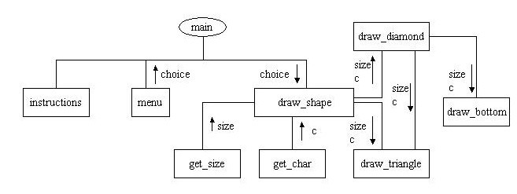

A triangle of size 4, using *:
*
***
*****
*******
A diamond of size 4, using *:
*
***
*****
*******
*****
***
*
What do we need for this program?
Problem definition
We first need to clearly define the problem, the inputs and the outputs.
Inputs:
1) a choice to draw one of the two shapes or to
quit the program,
2) a character choice which will be used for drawing
the selected shape, and
3) the size of the shape
Output:
One of these will be the output:
1) a triangle,
2) a diamond,
3) quit
Analysis of the problem
We need to break down the tasks that this program is supposed to complete.
The main tasks are:
1) ask for the input data
2) for both triangle and diamond, first display
a triangle of requested size, and then if the choice is a diamond, add
the bottom part
3) displays the shape
To write this program, we will assume that we have the following functions:
1) void instructions( )
// This function describes
the program and how it works
2) int menu( )
// This function will
return a choice to the main ; 1) draw triangle, 2) draw diamond, and 3)
quit
3) draw_shape(int choice)
// This function calls
on appropriate function depending on the choice to draw a shape
4) int get_size( )
// This function will
return the size of the shape, same function for either of the shapes
5) char get_char( )
// This function will
ask users to select a character that will be used to draw the shape
6) void draw_triangle(int size, char c)
// This function draws
a triangle of size size using character c
7) void draw_diamond(int size, char c)
// This function first
calls draw_triangle, then add_bottom to draw the diamond
8) void draw_bottom(int size, char c)
// This function actually
draws an upside down triangle of size size-1 as the bottom of the diamond
Now that we have defined the functions, it is time to design the algorithm for the program. However, we can write the main part of the program.
int main ( )
{
int choice;
instructions( );
choice = menu( );
if(choice != 1 || choice != 2)
{
cout << "You requested
to quit, bye \n";
return 0;
}
draw_shape(choice);
return 0;
}
Algorithm Design
The following diagram (structure chart) summarizes the algorithm design
for this program. The direction of each arrow is the same as the
direction in which the data flow.

Testing and Debugging
Each function should be designed, coded, and tested as a separate unit
from the rest of the program. To test a function, we will use a driver
program. It is impossible to test a function inside a function
that has not been written. In order to solve this problem we
use the simplified version of the function that is not written yet.
These functions are referred to as stubs.
Suppose we want to test the draw triangle function. This function is called within the draw_shape function. There are two arguments to this function, the size and the character c. To test the program we can use the driver shown below:
#include<iostream>
using namespace std;
void draw_triangle(int size, char c);
void draw_shape(int size, char c);
int main( )
{
// Simplified version of main, notice that char and size are fixed
for now
char c = '*';
int size = 4;
draw_shape(size, c);
return 0;
}
void draw_shape(int size, char c) //A simplified version of draw_shape
{
draw_triangle(size, c);
}
void draw_triangle(int size, char c)
{
// complete version of draw_triangle function
....
....
}
Exercise 4.5
Complete the function draw_triangle in the above program, then use
the driver and stubs given above to draw a triangle. Repeat a similar
thing for the draw_diamond function.